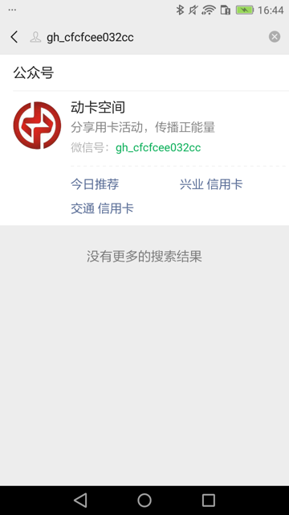
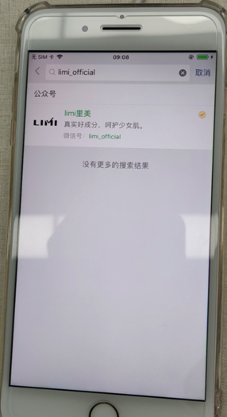

微信相关
查找微信公众号中文全名
代码：
# def findWeixinPublicAccountZhcnSoup(self, soup, curAccountId):
def findWeixinPublicAccountZhcnFullName(self, soup, curAccountId):
"""Find weixin public account element's zh-CN full name
Args:
soup (soup): soup of current page xml
Returns:
public account zh-CN full name
Raises:
"""
# accountZhcnTextSoup = None
accountZhcnFullName = ""
parentNodeLocator = None
"""
搜索结果中文名节点是Text
<XCUIElementTypeOther type="XCUIElementTypeOther" name="搜一搜" label="搜一搜" enabled="true" visible="true" x="0" y="70" width="414" height="666">
<XCUIElementTypeOther type="XCUIElementTypeOther" value="2" name="公众号" label="公众号" enabled="true" visible="true" x="16" y="83" width="398" height="23">
<XCUIElementTypeOther type="XCUIElementTypeOther" value="2" enabled="true" visible="true" x="16" y="83" width="52" height="23">
<XCUIElementTypeStaticText type="XCUIElementTypeStaticText" value="2" name="公众号" label="公众号" enabled="true" visible="true" x="16" y="83" width="52" height="22"/>
</XCUIElementTypeOther>
</XCUIElementTypeOther>
<XCUIElementTypeOther type="XCUIElementTypeOther" enabled="true" visible="false" x="16" y="129" width="60" height="60"/>
<XCUIElementTypeOther type="XCUIElementTypeOther" enabled="true" visible="true" x="88" y="126" width="310" height="23">
<XCUIElementTypeStaticText type="XCUIElementTypeStaticText" value="动卡空间" name="动卡空间" label="动卡空间" enabled="true" visible="true" x="88" y="126" width="70" height="22"/>
</XCUIElementTypeOther>
<XCUIElementTypeOther type="XCUIElementTypeOther" enabled="true" visible="true" x="88" y="151" width="310" height="21">
<XCUIElementTypeStaticText type="XCUIElementTypeStaticText" value="分享用卡活动，传播正能量" name="分享用卡活动，传播正能量" label="分享用卡活动，传播正能量" enabled="true" visible="true" x="88" y="152" width="184" height="19"/>
</XCUIElementTypeOther>
<XCUIElementTypeOther type="XCUIElementTypeOther" enabled="true" visible="true" x="88" y="178" width="266" height="20">
<XCUIElementTypeStaticText type="XCUIElementTypeStaticText" value="微信号：" name="微信号：" label="微信号：" enabled="true" visible="true" x="88" y="178" width="58" height="19"/>
<XCUIElementTypeStaticText type="XCUIElementTypeStaticText" value="gh_cfcfcee032cc" name="gh_cfcfcee032cc" label="gh_cfcfcee032cc" enabled="true" visible="true" x="145" y="178" width="112" height="19"/>
</XCUIElementTypeOther>
搜索结果中文名节点是Other，其下是多个Text节点：
<XCUIElementTypeOther type="XCUIElementTypeOther" name="搜一搜" label="搜一搜" enabled="true" visible="true" x="0" y="70" width="375" height="600">
<XCUIElementTypeOther type="XCUIElementTypeOther" value="2" name="公众号" label="公众号" enabled="true" visible="true" x="16" y="83" width="359" height="23">
<XCUIElementTypeStaticText type="XCUIElementTypeStaticText" value="2" name="公众号" label="公众号" enabled="true" visible="true" x="16" y="83" width="52" height="23"/>
</XCUIElementTypeOther>
<XCUIElementTypeOther type="XCUIElementTypeOther" enabled="true" visible="false" x="16" y="129" width="60" height="60"/>
<XCUIElementTypeImage type="XCUIElementTypeImage" enabled="true" visible="true" x="343" y="128" width="16" height="16"/>
<XCUIElementTypeImage type="XCUIElementTypeImage" enabled="true" visible="true" x="324" y="128" width="16" height="16"/>
<XCUIElementTypeOther type="XCUIElementTypeOther" enabled="true" visible="true" x="88" y="126" width="271" height="23">
<XCUIElementTypeStaticText type="XCUIElementTypeStaticText" value="牛尔" name="牛尔" label="牛尔" enabled="true" visible="true" x="88" y="126" width="35" height="22"/>
<XCUIElementTypeStaticText type="XCUIElementTypeStaticText" value="Tmall" name="Tmall" label="Tmall" enabled="true" visible="true" x="122" y="126" width="41" height="22"/>
<XCUIElementTypeStaticText type="XCUIElementTypeStaticText" value="旗舰店" name="旗舰店" label="旗舰店" enabled="true" visible="true" x="162" y="126" width="53" height="22"/>
</XCUIElementTypeOther>
<XCUIElementTypeOther type="XCUIElementTypeOther" enabled="true" visible="true" x="88" y="151" width="271" height="21">
<XCUIElementTypeStaticText type="XCUIElementTypeStaticText" value="牛尔亲研天猫官方旗舰店" name="牛尔亲研天猫官方旗舰店" label="牛尔亲研天猫官方旗舰店" enabled="true" visible="true" x="88" y="152" width="169" height="19"/>
</XCUIElementTypeOther>
<XCUIElementTypeOther type="XCUIElementTypeOther" enabled="true" visible="true" x="88" y="178" width="271" height="19">
<XCUIElementTypeStaticText type="XCUIElementTypeStaticText" value="微信号：" name="微信号：" label="微信号：" enabled="true" visible="true" x="88" y="178" width="58" height="18"/>
<XCUIElementTypeStaticText type="XCUIElementTypeStaticText" value="niuer-tmall" name="niuer-tmall" label="niuer-tmall" enabled="true" visible="true" x="145" y="178" width="70" height="18"/>
</XCUIElementTypeOther>
公众号中文名全部是绿色的：
<XCUIElementTypeOther type="XCUIElementTypeOther" name="搜一搜" label="搜一搜" enabled="true" visible="true" x="0" y="70" width="414" height="666">
<XCUIElementTypeOther type="XCUIElementTypeOther" value="2" name="公众号" label="公众号" enabled="true" visible="true" x="16" y="83" width="398" height="23">
<XCUIElementTypeOther type="XCUIElementTypeOther" value="2" enabled="true" visible="true" x="16" y="83" width="52" height="23">
<XCUIElementTypeStaticText type="XCUIElementTypeStaticText" value="2" name="公众号" label="公众号" enabled="true" visible="true" x="16" y="83" width="52" height="22"/>
</XCUIElementTypeOther>
</XCUIElementTypeOther>
<XCUIElementTypeOther type="XCUIElementTypeOther" enabled="true" visible="false" x="16" y="129" width="60" height="60"/>
<XCUIElementTypeImage type="XCUIElementTypeImage" enabled="true" visible="true" x="382" y="128" width="16" height="16"/>
<XCUIElementTypeOther type="XCUIElementTypeOther" enabled="true" visible="true" x="88" y="126" width="310" height="23">
<XCUIElementTypeStaticText type="XCUIElementTypeStaticText" value="limi里美" name="limi里美" label="limi里美" enabled="true" visible="true" x="88" y="126" width="61" height="22"/>
</XCUIElementTypeOther>
<XCUIElementTypeOther type="XCUIElementTypeOther" enabled="true" visible="true" x="88" y="151" width="310" height="21">
<XCUIElementTypeStaticText type="XCUIElementTypeStaticText" value="真实好成分，呵护少女肌。" name="真实好成分，呵护少女肌。" label="真实好成分，呵护少女肌。" enabled="true" visible="true" x="88" y="152" width="184" height="19"/>
</XCUIElementTypeOther>
<XCUIElementTypeOther type="XCUIElementTypeOther" enabled="true" visible="true" x="88" y="178" width="310" height="19">
<XCUIElementTypeStaticText type="XCUIElementTypeStaticText" value="微信号：" name="微信号：" label="微信号：" enabled="true" visible="true" x="88" y="178" width="58" height="18"/>
<XCUIElementTypeStaticText type="XCUIElementTypeStaticText" value="limi_official" name="limi_official" label="limi_official" enabled="true" visible="true" x="145" y="178" width="72" height="18"/>
</XCUIElementTypeOther>
<XCUIElementTypeOther type="XCUIElementTypeOther" enabled="true" visible="false" x="0" y="0" width="0" height="0"/>
<XCUIElementTypeOther type="XCUIElementTypeOther" enabled="true" visible="true" x="0" y="237" width="414" height="25">
<XCUIElementTypeStaticText type="XCUIElementTypeStaticText" value="没有更多的搜索结果" name="没有更多的搜索结果" label="没有更多的搜索结果" enabled="true" visible="true" x="133" y="239" width="148" height="20"/>
</XCUIElementTypeOther>
</XCUIElementTypeOther>
"""
foundAccountId = soup.find(
'XCUIElementTypeStaticText',
attrs={"value": curAccountId, "name": curAccountId, "type": "XCUIElementTypeStaticText"},
)
logging.debug("foundAccountId=%s", foundAccountId)
# foundAccountId=<XCUIElementTypeStaticText enabled="true" height="18" label="gh_cfcfcee032cc" name="gh_cfcfcee032cc" type="XCUIElementTypeStaticText" value="gh_cfcfcee032cc" visible="true" width="112" x="145" y="178"/>
if foundAccountId:
idParent = foundAccountId.parent
logging.debug("idParent=%s", idParent)
if idParent:
# method 1: two prev.prev
# # idParentPrev = idParent.previous_sibling
# idParentPrev = idParent.previous_sibling.previous_sibling
# accountDescNode = idParentPrev
# logging.info("accountDescNode=%s", accountDescNode) # '\n'
# if accountDescNode:
# # accountZhcnNode = accountDescNode.previous_sibling
# accountZhcnNode = accountDescNode.previous_sibling.previous_sibling
# logging.info("accountZhcnNode=%s", accountZhcnNode)
# # method 2: siblings[-2] of XCUIElementTypeOther
# idParentPrevSiblingList = idParent.previous_siblings
# accountDescNode = None
# accountZhcnNode = None
# TypeOther = "XCUIElementTypeOther"
# typeOtherNodeCurIdx = 0
# AccountDescNodeIdx = 1
# AccountZhcnNodeIdx = 2
# for eachPrevSiblingNode in idParentPrevSiblingList:
# curNodeName = eachPrevSiblingNode.name
# isTypeOtherNode = curNodeName == TypeOther
# if isTypeOtherNode:
# typeOtherNodeCurIdx += 1
# if AccountDescNodeIdx == typeOtherNodeCurIdx:
# accountDescNode = eachPrevSiblingNode
# elif AccountZhcnNodeIdx == typeOtherNodeCurIdx:
# accountZhcnNode = eachPrevSiblingNode
# hasFoundAll = accountDescNode and accountZhcnNode
# if hasFoundAll:
# break
# logging.info("accountDescNode=%s", accountDescNode)
# logging.info("accountZhcnNode=%s", accountZhcnNode)
# if accountZhcnNode:
# accountZhcnTextSoup = accountZhcnNode.find(
# 'XCUIElementTypeStaticText',
# attrs={ "type": "XCUIElementTypeStaticText"},
# )
# method 3: parent'parent is 搜一搜, direct child 2nd XCUIElementTypeOther of enabled="true" visible="true"
idParentParent = idParent.parent
if idParentParent:
otherSoupList = idParentParent.find_all(
"XCUIElementTypeOther",
attrs={"type": "XCUIElementTypeOther", "enabled":"true", "visible":"true"},
recursive=False,
)
if otherSoupList and (len(otherSoupList) >= 2):
firstOtherSoup = otherSoupList[0]
if firstOtherSoup.attrs["name"] == "公众号":
secondOtherSoup = otherSoupList[1]
zhcnNameSoupList = secondOtherSoup.find_all(
"XCUIElementTypeStaticText",
attrs={"type": "XCUIElementTypeStaticText", "enabled":"true", "visible":"true"},
)
if zhcnNameSoupList:
for eachTextSoup in zhcnNameSoupList:
curPartName = eachTextSoup.attrs.get("value")
accountZhcnFullName += curPartName
if accountZhcnFullName:
secondOtherAttrDict = secondOtherSoup.attrs
parentX = secondOtherAttrDict["x"]
parentY = secondOtherAttrDict["y"]
parentWidth = secondOtherAttrDict["width"]
parentHeight = secondOtherAttrDict["height"]
parentNodeLocator = {
"type": "XCUIElementTypeOther",
"enabled": "true",
"visible": "true",
"x": parentX,
"y": parentY,
"width": parentWidth,
"height": parentHeight,
}
# return accountZhcnTextSoup
# return accountZhcnFullName
return accountZhcnFullName, parentNodeLocator
支持多种情况：
- 普通的：
动卡空间- 
- 中英文混合：
牛尔Tmall旗舰店 - 中英文混合带绿色的：
limi里美- 